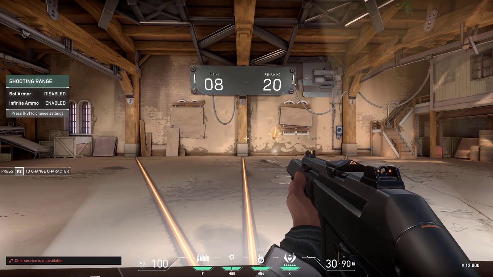

Competitive and Ranks
If you are looking for a more serious type of gameplay, then try your skill and luck in the competitive game mode.
Competitive is basically just unrated but these games affect your rank. If you are brand new at Valorant, you most likely will not be placed with the higher ranked players. You will be paired with people with similar ranks and skillsets.
Competitive matches are the same as unranked matches with the addition of a win-based ranking system which assigns a rank to each player after 5 games are played. Before you can play in competitive games, you will need to win 10 unrated matches beforehand. In July 2020, Riot introduced a "win by two" condition for competitive matches, where instead of playing a single sudden death round at 12-12, teams will alternate playing rounds on attack and defense in overtime until a team claims victory by securing a two-match lead. Each overtime round gives players the same amount of money to purchase guns and abilities, as well as approximately half of their ultimate ability charge. After each group of two rounds, players may vote to end the game in a draw, requiring 6 players after the first set, 3 after the second, and thereafter only 1 player to agree to a draw. The competitive ranking system ranges from iron to radiant. Every rank but immortal and radiant has 3 tiers.
Valorant Ranking System

Practice Range
Before starting to play competitive, try warming up your aim. You can warm up your aim in casual game modes, or you can try out the shooting range. You can adjust everything the way you'd like.
